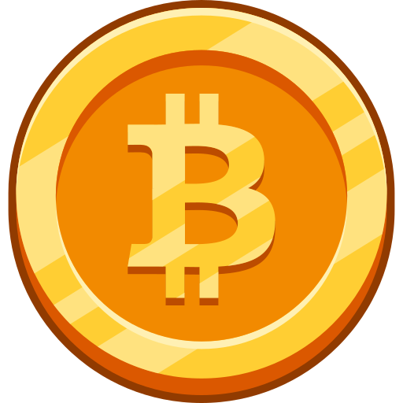
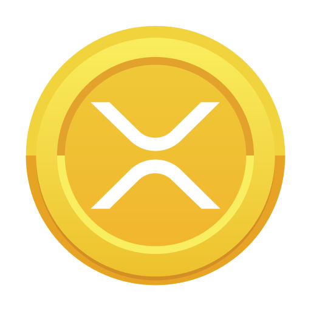
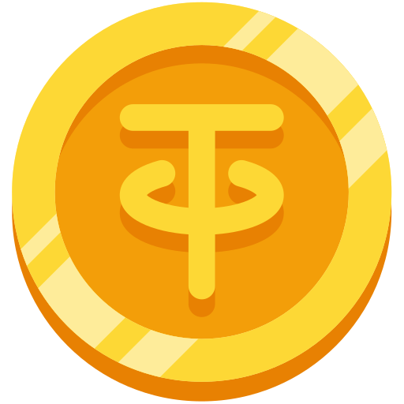

BTC
Bitcoin(BTC) is the first cryptocurrency built on blockchain technology, also known as a decentralized digital currency that is based on cryptograhy Unlike government-issued or fiat currencies such as US Dollars or Euro which are controlled by central banks, Bitcoin can operate without the need of a central authority like a central bank or a company. The decentralized nature allows it to operate on a peer-to-peer network whereby users are able to send funds to each other without going through intermediaries.
 ETH
ETH
Ethereum is a Proof-of-Stake blockchain that powers decentralized applications (dApps) through smart contracts, without being controlled by a centralized entity. As the first blockchain to feature smart contracts, it has the largest ecosystem of decentralized applications, ranging from decentralized exchanges to crypto lending and borrowing platforms and more.
Ethereum is also home to numerous Layer 2 solutions that offer users a cheaper and faster way to process transactions on the blockchain. Some of these solutions include Arbitrum, which rolls up multiple transactions into a single transaction on Ethereum, and Polygon’s Proof-of-Stake chain, which is a sidechain that runs parallel to the Ethereum blockchain.

XRP
Ripple is a privately-held fintech company that provides a global payment solution via its patented payment network called Ripple Network (also known as RippleNet). RippleNet is a payment network that is built on top of Ripple’s consensus ledger, called XRP Ledger (also known as XRPL). Ripple funded the development of the open-source XRP Ledger.
Unlike most cryptocurrencies out there that cater to peer-to-peer needs, Ripple was made to connect banks, payment providers and digital asset exchanges, enabling real-time settlement expeditions and lower transaction fees.
 BNB
BNB
BNB (BNB), previously also known as Binance Coin (BNB), is a cryptocurrency coin created and issued by the cryptocurrency exchange Binance. Initially created on the Ethereum blockchain as an ERC-20 token in July 2017, BNB was migrated over to BNB Smart Chain in February 2019 and became the native coin of the Binance Chain.
BNB can be used to pay for fees when trading on Binance, and usually at a discounted rate. Due to the primary utility, BNB has seen massive growth in interest throughout the years . Several rounds of token burn events have appreciated BNB price and pushed it up as one of the top-10 cryptocurrencies by market capitalization.

TET
Tether is a stablecoin pegged to the US Dollar. A stablecoin is a type of cryptocurrency whose value is pegged to another fiat currency like the US Dollar or to a commodity like Gold.
Tether is the first stablecoin to be created and it is the most popular stablecoin used in the ecosystem. It has the largest stablecoins by circulation and market capitalization.
 SOL
SOL
Solana is a Layer 1 blockchain that offers users fast speeds and affordable costs. It supports smart contracts and facilitates the creation of decentralized applications (dApps). Projects built on Solana include a variety of DeFi platforms as well as NFT marketplaces, where users can buy Solana-based NFT projects. Its high performance means Solana doesn’t require a traditional scaling Layer 2 solution; instead, Layer 2s on Solana focus on interoperability and connecting Solana to other chains.